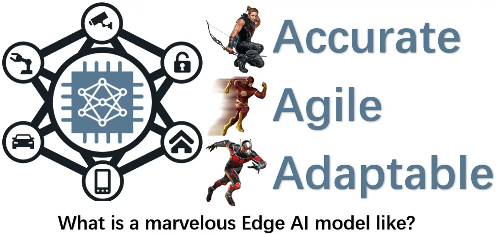
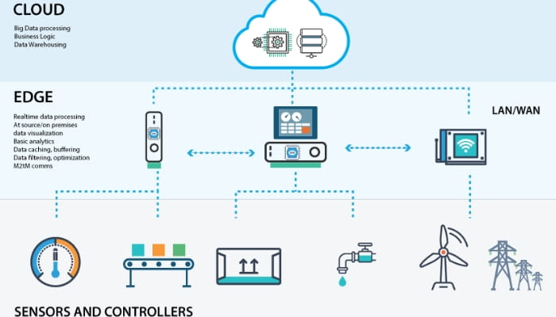
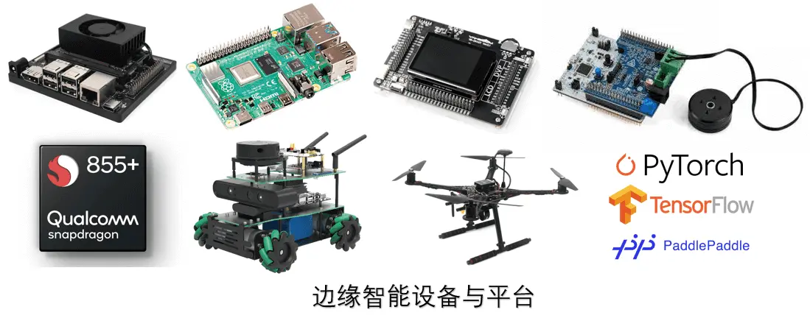
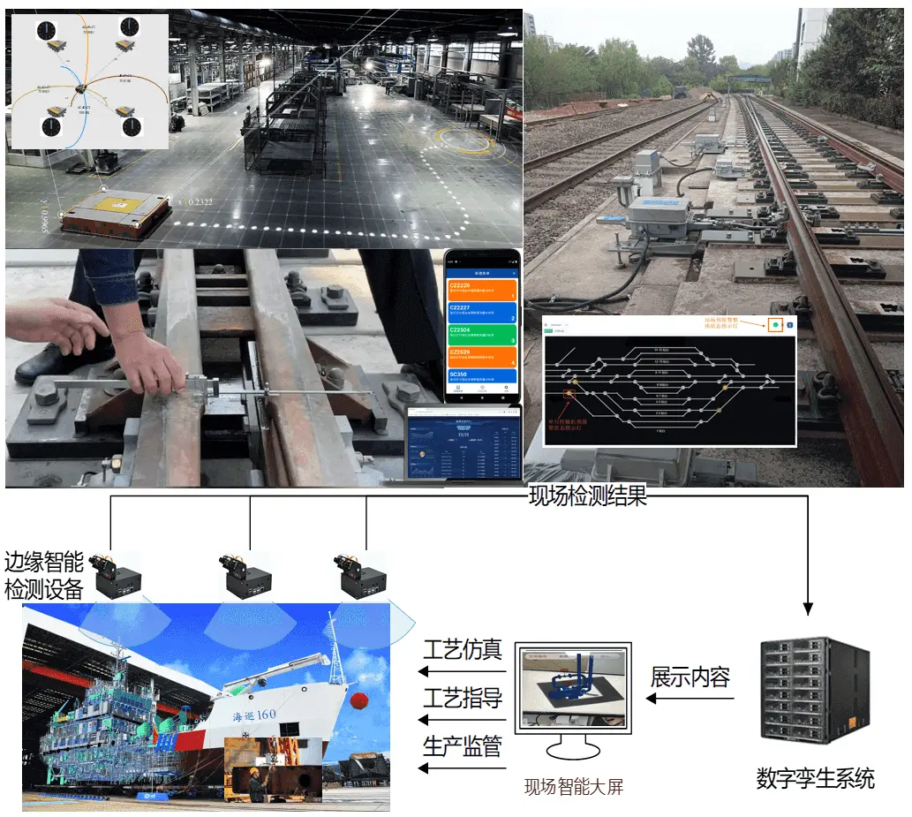
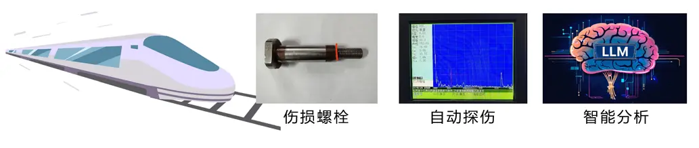

边缘计算是在靠近物或数据源头的网络边缘侧，融合网络、计算、存储、应用核心能力的分布式开放平台，就近提供边缘智能服务，满足行业数字化在敏捷联接、实时业务、数据优化、应用智能、安全与隐私保护等方面的关键需求。
简而言之，我们的研究工作是在设备资源受限的条件下，实现边缘侧实时智能计算，为工业应用和终端用户提供服务。
我们崇尚学以致用的科研模式：理论研究 + 系统实践 + 工程应用 + 人才培养，欢迎产学研合作，欢迎加入我们。


考虑到边缘计算对规模性、实时性和安全性等方面的要求，研究实现高效率、低能耗的分布式资源优化调度算法，实现对通信、计算、网络和存储等资源的优化利用。
运筹帷幄，各司其职
传统机器学习特别是深度学习对硬件设备的计算能力要求非常高，面向具体应用需求，研究专门针对资源受限边缘设备的分布式计算训练模式和精简深度网络模型。
麻雀虽小，五脏俱全
与轨道交通、网联汽车、船舶制造和工业控制等领域的专家、工程师协同工作，研究将边缘计算和边缘智能的研究思想和技术成果落地，投入实用，发挥其独特作用。
面向行业，聚焦应用


